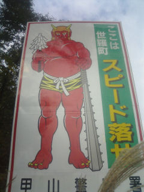

鬼とは何モノか？
和英辞書で鬼を引くと"demon","devil","orge","bogle"だと。
微妙に違うような（汗）。
で、角川の漢和辞書「新字源」で引きます。
人（儿）が大きな面（田（正確には田の上に”ノ”がつく字））を被って死者の霊魂に扮するさまにより神霊の意を表す。
これを部首にして、聖霊、その作用などに関する字が出来ている。
一 おに。
二 人間わざを超えた優れた働きの形容。
三 星座の名。二十八宿の一つ。
鬼⇔神